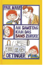

Weil am Sonntag die Sonne scheint, am Montag Herr Mon zu Besuch kommt, am Dienstag Dienst ist und am Mittwoch Wochenmitte, weil es am Donnerstag donnert und am Freitag frei gibt - deswegen, aber auch nur deswegen kommt am Samstag das Sams zuruck, jenes kleine russelnasige Wesen mit den roten Stachelhaaren, das der brave Herr Taschenbier gleich beim ersten Besuch so lieb gewonnen hat. Zum Gluck hat es sich uberhaupt nicht verandert, das Sams, nur dass es sich jetzt auch auf komplizierte Wunschmaschinen versteht. Und Herrn Taschenbier schlie?lich hilft, selbst fur die Erfullung seiner Wunsche zu sorgen.